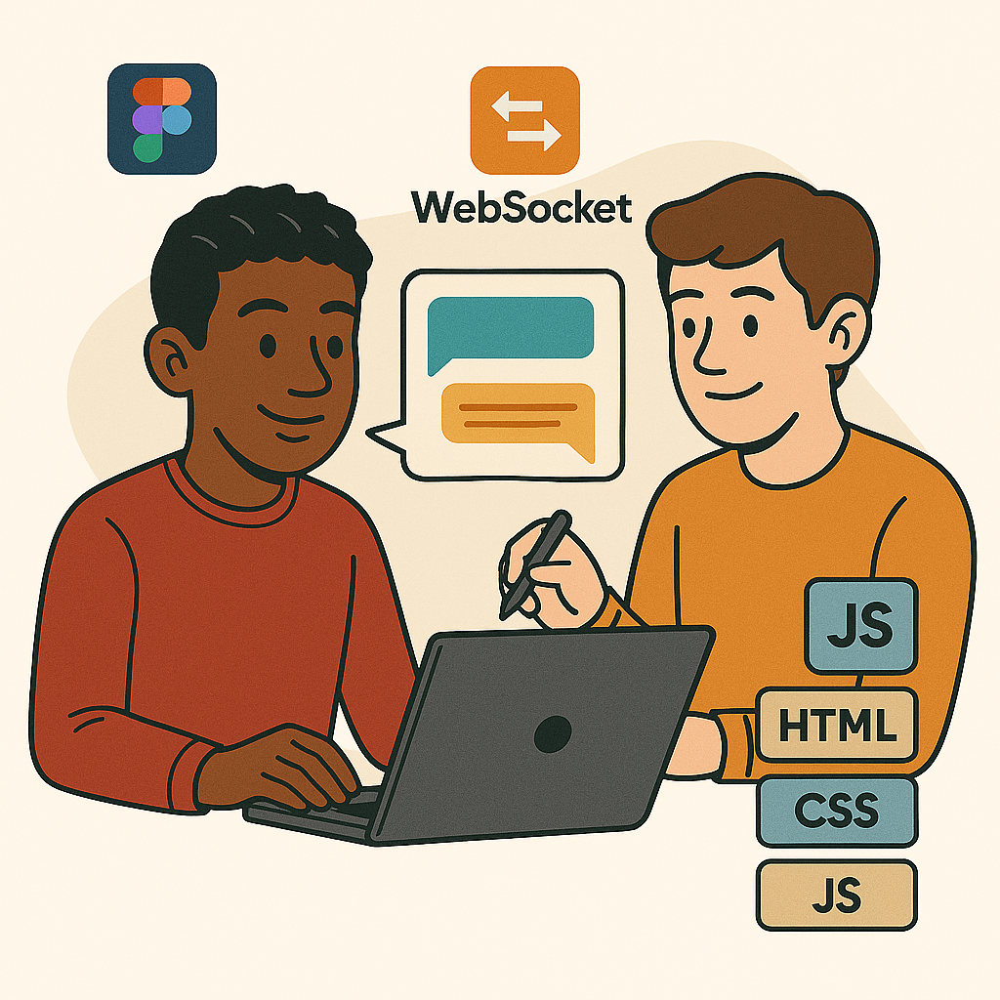
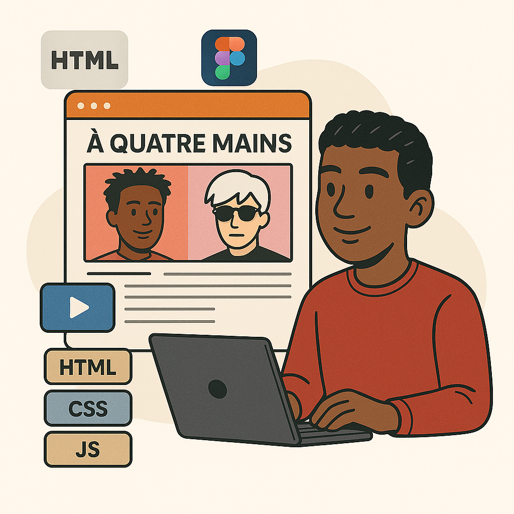
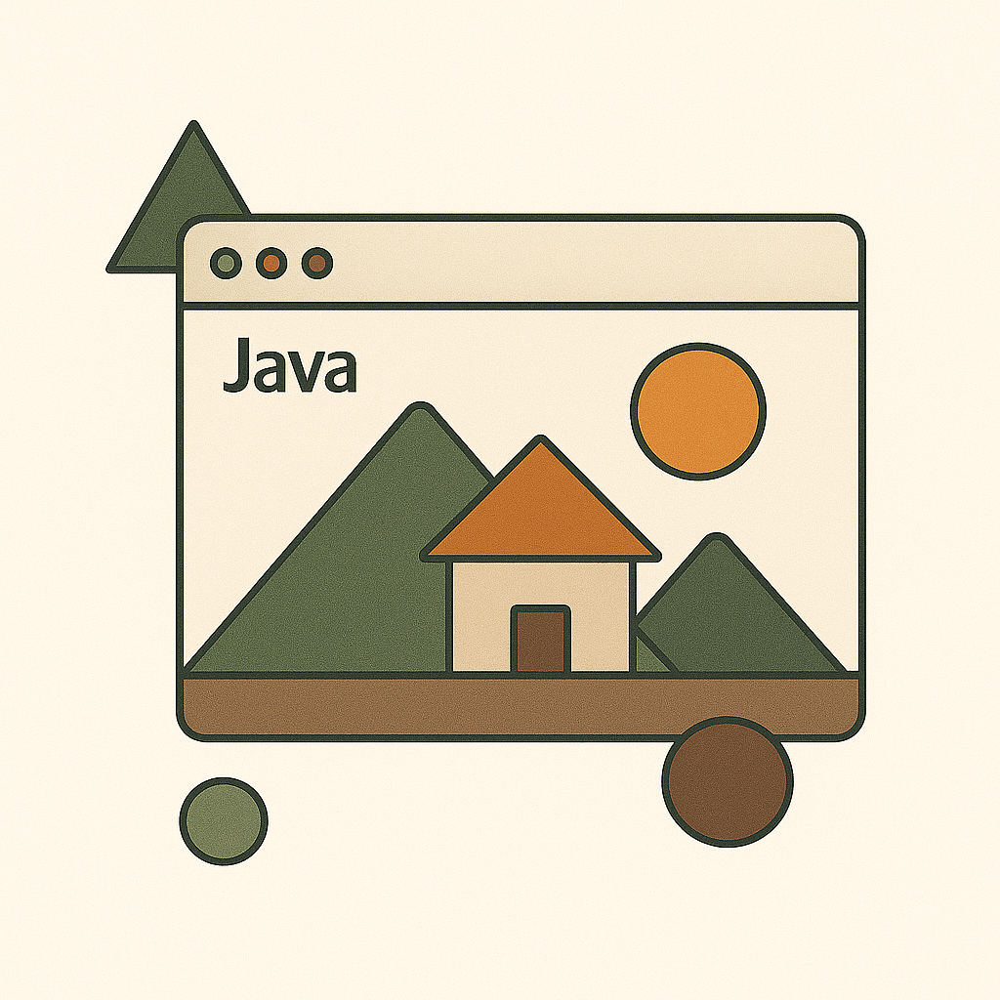

Projets réalisés

CinéSearch
Application web de recherche et d’exploration de films avec l’API TMDB. Recherche dynamique, pages de détail, interface en français. Projet personnel pour progresser sur React et la consommation d’API REST.
Voir le projet
OtakuGo
Application mobile cross-platform suggérant des contenus selon les préférences de l’utilisateur. Gestion de données locales en JSON. Projet en équipe de 5.
Voir le projet
WeatherDash
Application météo interactive construite avec Angular 19 et l’API OpenWeatherMap. Elle affiche la météo en temps réel d’une ville et les prévisions de température sur 24h sous forme de graphique. Projet personnel réalisé en dehors du cadre scolaire pour progresser sur Angular, TypeScript et la visualisation de données avec Chart.js.
Voir le projet
Application de messagerie avec annotation des messages
Dans le cadre d’un projet de groupe, nous avons développé une application web de messagerie instantanée avec une particularité originale : pour pouvoir continuer à échanger, chaque utilisateur devait annoter les messages envoyés et reçus. Ce mécanisme visait à encourager une réflexion active et une meilleure compréhension des échanges.
Techniquement, l’application a été réalisée en HTML, CSS et JavaScript. Côté back-end, nous avons utilisé PHP avec une architecture MVC. Pour les échanges en temps réel, nous avons mis en place WebSocket avec la bibliothèque PHP Ratchet.
Voir le projet
À Quatre Mains — Basquiat & Warhol
Site web fictif visant à présenter une exposition imaginée, inspirée de l’exposition réelle À quatre mains consacrée aux œuvres collaboratives de Basquiat et Warhol. Intégration vidéo et traduction anglaise dynamique via JavaScript. Maquettes conçues avec Figma.
Voir le projet
Shapes — Dessin Java
Application graphique Java pour dessiner des formes géométriques (maison, montagnes). Premier contact avec l’utilisation de bibliothèques externes et la programmation orientée objet en manipulant des classes pour représenter les différentes formes.